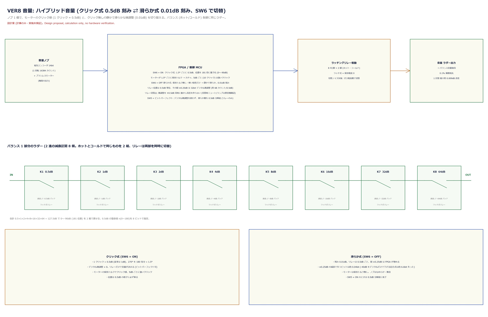

ノブ 1 個で、モーターのクリック感のある操作 (1 クリック = 0.5dB) と、クリック無しの静かで滑らかな操作 (0.01dB 刻み) を、スイッチ SW6 で切り替えます。
クリック式 (SW6 = ON): 270° を 180 等分、1 クリック = 1.5° = 0.5dB (従来は 1dB)。0〜−90dB の 181 位置。モーターの保持トルクでカチッと感じさせ、5dB ごとに強いクリックを入れる案です。音量はラッチ式リレーだけで決まります。
滑らか式 (SW6 = OFF): 保持トルクを切り、軽い粘性だけで静かに回ります。刻みは 0.01dB。リレーは 0.5dB 単位の位置を受け持ち、その間の ±0.25dB は FPGA の 32bit デジタル微調整で埋めます (失うビットは約 0.04bit)。リレーの切替点では、微調整を ∓0.5dB 同時に動かして段差を作りません。
SW5 (ビットパーフェクト) が ON のときはデジタル微調整を使わないため、滑らか式でも分解能は 0.5dB になります。
回路: 各脚に 8 個の減衰区間 (0.5 / 1 / 2 / 4 / 8 / 16 / 32 / 64dB) をラッチ式リレーで 2 進に切り替えます。0.1% 薄膜抵抗の誤差は 1 区間あたり最大約 0.009dB です。
位置づけ: 設計案 (計算のみ)。実機測定は未実施です。図の中の文字は日本語です。翻訳は AI が書いたもので、ネイティブスピーカーによる確認は未実施です。
One knob offers a motor-driven clicky feel (one click = 0.5 dB) or a quiet, smooth, click-free feel (0.01 dB steps), selected with switch SW6.
Clicky mode (SW6 = ON): the 270° arc is split into 180 parts, one click = 1.5° = 0.5 dB (it was 1 dB). 181 positions from 0 to -90 dB. The motor's holding torque gives the click, with a stronger click every 5 dB proposed. The level is set by the latching relays alone.
Smooth mode (SW6 = OFF): the holding torque is switched off and only light damping remains, so the knob turns quietly. The step is 0.01 dB. The relays cover the 0.5 dB positions and a 32-bit digital trim in the FPGA fills the +-0.25 dB in between (about 0.04 bit lost). At a relay switching point the trim moves by -+0.5 dB at the same time, so no level step appears.
With SW5 (bit-perfect) ON the digital trim is not used, so even smooth mode has 0.5 dB resolution.
Circuit: each leg has eight attenuation sections (0.5 / 1 / 2 / 4 / 8 / 16 / 32 / 64 dB) switched in binary by latching relays. 0.1% thin-film resistors add at most about 0.009 dB per section.
Status: design proposal (calculation only); no hardware measurements. The text inside the figure is Japanese. Translations were written by an AI and have not been checked by native speakers.
Ein einziger Drehknopf bietet entweder motorisch erzeugtes Klickgefühl (ein Klick = 0,5 dB) oder ein leises, gleitendes Drehen ohne Klicks (0,01-dB-Schritte); umgeschaltet wird mit dem Schalter SW6.
Klickmodus (SW6 = EIN): Der Drehwinkel von 270° ist in 180 Teile geteilt, ein Klick = 1,5° = 0,5 dB (früher 1 dB). 181 Stellungen von 0 bis −90 dB. Das Haltemoment des Motors erzeugt den Klick; vorgeschlagen ist ein stärkerer Klick alle 5 dB. Der Pegel wird allein von den Latching-Relais bestimmt.
Gleitmodus (SW6 = AUS): Das Haltemoment wird abgeschaltet, es bleibt nur eine leichte Dämpfung, der Knopf dreht sich leise. Die Schrittweite beträgt 0,01 dB. Die Relais decken die 0,5-dB-Stellungen ab, eine digitale 32-Bit-Feinkorrektur im FPGA füllt die ±0,25 dB dazwischen (etwa 0,04 Bit gehen verloren). Am Relais-Umschaltpunkt wird die Korrektur gleichzeitig um ∓0,5 dB bewegt, damit kein Pegelsprung entsteht.
Ist SW5 (Bit-Perfect) EIN, wird die digitale Feinkorrektur nicht verwendet; auch der Gleitmodus hat dann nur 0,5 dB Auflösung.
Schaltung: Jeder Zweig hat acht Dämpfungsglieder (0,5 / 1 / 2 / 4 / 8 / 16 / 32 / 64 dB), die binär über Latching-Relais geschaltet werden. 0,1-%-Dünnschichtwiderstände erzeugen höchstens etwa 0,009 dB Abweichung je Glied.
Status: Entwurf (nur berechnet), keine Messungen am Gerät. Die Beschriftung in der Abbildung ist japanisch. Die Übersetzungen stammen von einer KI und wurden nicht von Muttersprachlern geprüft.
Одна ручка даёт либо ощущение щелчков от мотора (один щелчок = 0,5 дБ), либо тихое плавное вращение без щелчков (шаг 0,01 дБ); режим выбирается переключателем SW6.
Режим щелчков (SW6 = ВКЛ): угол 270° разделён на 180 частей, один щелчок = 1,5° = 0,5 дБ (раньше 1 дБ). 181 положение от 0 до −90 дБ. Щелчок создаёт удерживающий момент мотора; предлагается более сильный щелчок через каждые 5 дБ. Уровень задают только реле с фиксацией.
Плавный режим (SW6 = ВЫКЛ): удерживающий момент отключён, остаётся лишь лёгкое демпфирование, ручка вращается тихо. Шаг 0,01 дБ. Реле отвечают за положения через 0,5 дБ, а 32-разрядная цифровая подстройка в ПЛИС заполняет промежуток ±0,25 дБ (теряется около 0,04 бита). В точке переключения реле подстройка одновременно смещается на ∓0,5 дБ, поэтому скачка уровня нет.
Если SW5 (бит-в-бит) включён, цифровая подстройка не используется, и даже в плавном режиме разрешение составляет 0,5 дБ.
Схема: в каждом плече восемь ступеней ослабления (0,5 / 1 / 2 / 4 / 8 / 16 / 32 / 64 дБ), коммутируемых двоично реле с фиксацией. Тонкоплёночные резисторы 0,1 % дают не более около 0,009 дБ погрешности на ступень.
Статус: проект (только расчёт), измерений на реальном устройстве нет. Надписи на рисунке — на японском. Переводы выполнены ИИ и не проверялись носителями языка.
Одна ручка дає або відчуття клацань від мотора (одне клацання = 0,5 дБ), або тихе плавне обертання без клацань (крок 0,01 дБ); режим обирається перемикачем SW6.
Режим клацань (SW6 = УВІМК): кут 270° поділено на 180 частин, одне клацання = 1,5° = 0,5 дБ (раніше 1 дБ). 181 положення від 0 до −90 дБ. Клацання створює утримувальний момент мотора; пропонується сильніше клацання через кожні 5 дБ. Рівень задають лише реле з фіксацією.
Плавний режим (SW6 = ВИМК): утримувальний момент вимкнено, лишається тільки легке демпфування, ручка обертається тихо. Крок 0,01 дБ. Реле відповідають за положення через 0,5 дБ, а 32-розрядне цифрове підстроювання в ПЛІС заповнює проміжок ±0,25 дБ (втрачається близько 0,04 біта). У точці перемикання реле підстроювання одночасно зміщується на ∓0,5 дБ, тож стрибка рівня немає.
Якщо SW5 (біт-у-біт) увімкнено, цифрове підстроювання не використовується, і навіть у плавному режимі роздільність становить 0,5 дБ.
Схема: у кожному плечі вісім ступенів послаблення (0,5 / 1 / 2 / 4 / 8 / 16 / 32 / 64 дБ), які двійково комутуються реле з фіксацією. Тонкоплівкові резистори 0,1 % дають не більше близько 0,009 дБ похибки на ступінь.
Статус: проєкт (лише розрахунок), вимірювань на реальному пристрої немає. Написи на рисунку — японською. Переклади виконано ШІ й не перевірено носіями мови.
Un'unica manopola offre il feeling a scatti generato dal motore (uno scatto = 0,5 dB) oppure una rotazione silenziosa e fluida senza scatti (passi da 0,01 dB), selezionabile con l'interruttore SW6.
Modalità a scatti (SW6 = ON): l'arco di 270° è diviso in 180 parti, uno scatto = 1,5° = 0,5 dB (prima 1 dB). 181 posizioni da 0 a −90 dB. La coppia di tenuta del motore dà lo scatto; si propone uno scatto più marcato ogni 5 dB. Il livello è fissato solo dai relè a ritenuta.
Modalità fluida (SW6 = OFF): la coppia di tenuta è disattivata e resta solo un leggero smorzamento, quindi la manopola gira in silenzio. Il passo è 0,01 dB. I relè coprono le posizioni da 0,5 dB e una regolazione fine digitale a 32 bit nell'FPGA riempie i ±0,25 dB intermedi (si perdono circa 0,04 bit). Al punto di commutazione dei relè la regolazione si sposta di ∓0,5 dB nello stesso istante, così non compare alcun gradino di livello.
Con SW5 (bit-perfect) su ON la regolazione fine digitale non viene usata, quindi anche la modalità fluida ha una risoluzione di 0,5 dB.
Circuito: ogni ramo ha otto sezioni di attenuazione (0,5 / 1 / 2 / 4 / 8 / 16 / 32 / 64 dB) commutate in binario da relè a ritenuta. Le resistenze a film sottile allo 0,1 % introducono al massimo circa 0,009 dB per sezione.
Stato: proposta di progetto (solo calcolo), nessuna misura su hardware. Il testo nella figura è in giapponese. Le traduzioni sono state scritte da un'IA e non sono state verificate da madrelingua.
Un seul bouton offre soit la sensation de crans produite par le moteur (un cran = 0,5 dB), soit une rotation silencieuse et fluide sans crans (pas de 0,01 dB), au choix avec l'interrupteur SW6.
Mode à crans (SW6 = ON) : l'arc de 270° est divisé en 180 parties, un cran = 1,5° = 0,5 dB (auparavant 1 dB). 181 positions de 0 à −90 dB. Le couple de maintien du moteur donne le cran ; un cran plus marqué tous les 5 dB est proposé. Le niveau est fixé uniquement par les relais à verrouillage.
Mode fluide (SW6 = OFF) : le couple de maintien est coupé et il ne reste qu'un léger amortissement, le bouton tourne donc silencieusement. Le pas est de 0,01 dB. Les relais couvrent les positions de 0,5 dB et un réglage fin numérique sur 32 bits dans le FPGA comble les ±0,25 dB intermédiaires (environ 0,04 bit perdu). Au point de commutation d'un relais, le réglage fin se déplace de ∓0,5 dB au même instant, de sorte qu'aucune marche de niveau n'apparaît.
Lorsque SW5 (bit-perfect) est sur ON, le réglage fin numérique n'est pas utilisé ; même en mode fluide la résolution est alors de 0,5 dB.
Circuit : chaque branche comporte huit cellules d'atténuation (0,5 / 1 / 2 / 4 / 8 / 16 / 32 / 64 dB) commutées en binaire par des relais à verrouillage. Les résistances à couche mince à 0,1 % ajoutent au plus environ 0,009 dB par cellule.
Statut : proposition de conception (calcul seulement), aucune mesure sur matériel. Le texte dans la figure est en japonais. Les traductions ont été rédigées par une IA et n'ont pas été vérifiées par des locuteurs natifs.
Un solo mando ofrece la sensación de clics generada por el motor (un clic = 0,5 dB) o un giro silencioso y suave sin clics (pasos de 0,01 dB), seleccionable con el interruptor SW6.
Modo con clics (SW6 = ON): el arco de 270° se divide en 180 partes, un clic = 1,5° = 0,5 dB (antes 1 dB). 181 posiciones de 0 a −90 dB. El par de retención del motor produce el clic; se propone un clic más fuerte cada 5 dB. El nivel lo fijan solo los relés de enclavamiento.
Modo suave (SW6 = OFF): se desactiva el par de retención y solo queda un ligero amortiguamiento, de modo que el mando gira en silencio. El paso es de 0,01 dB. Los relés cubren las posiciones de 0,5 dB y un ajuste fino digital de 32 bits en la FPGA rellena los ±0,25 dB intermedios (se pierden unos 0,04 bits). En el punto de conmutación de un relé, el ajuste fino se desplaza ∓0,5 dB a la vez, así que no aparece ningún escalón de nivel.
Con SW5 (bit-perfect) en ON no se usa el ajuste fino digital, por lo que incluso el modo suave tiene una resolución de 0,5 dB.
Circuito: cada rama tiene ocho secciones de atenuación (0,5 / 1 / 2 / 4 / 8 / 16 / 32 / 64 dB) conmutadas en binario por relés de enclavamiento. Las resistencias de película delgada al 0,1 % añaden como máximo unos 0,009 dB por sección.
Estado: propuesta de diseño (solo cálculo), sin mediciones en hardware. El texto dentro de la figura está en japonés. Las traducciones las escribió una IA y no las han revisado hablantes nativos.
يوفّر مقبض واحد إما إحساس النقرات الناتج عن المحرّك (نقرة واحدة = 0.5 ديسيبل) أو دورانًا هادئًا وسلسًا بلا نقرات (خطوة 0.01 ديسيبل)، ويُختار ذلك بالمفتاح SW6.
وضع النقرات (SW6 = تشغيل): يُقسَّم قوس 270° إلى 180 جزءًا، والنقرة الواحدة = 1.5° = 0.5 ديسيبل (كانت 1 ديسيبل). 181 موضعًا من 0 إلى −90 ديسيبل. تُنتج عزم تثبيت المحرّك النقرة، ويُقترح نقرة أقوى كل 5 ديسيبل. ويُحدَّد المستوى بالمرحّلات ذات التثبيت وحدها.
الوضع السلس (SW6 = إيقاف): يُلغى عزم التثبيت ويبقى تخميد خفيف فقط، فيدور المقبض بهدوء. الخطوة 0.01 ديسيبل. تتولى المرحّلات المواضع بخطوة 0.5 ديسيبل، ويملأ ضبط رقمي دقيق بدقة 32 بت في FPGA مجال ±0.25 ديسيبل بينها (يُفقد نحو 0.04 بت). وعند نقطة تبديل المرحّل يتحرك الضبط الدقيق بمقدار ∓0.5 ديسيبل في اللحظة نفسها فلا تظهر قفزة في المستوى.
عندما يكون SW5 (بت بيرفكت) قيد التشغيل لا يُستخدم الضبط الرقمي الدقيق، فتكون الدقة 0.5 ديسيبل حتى في الوضع السلس.
الدارة: في كل فرع ثماني مراحل توهين (0.5 / 1 / 2 / 4 / 8 / 16 / 32 / 64 ديسيبل) تُبدَّل ثنائيًا بمرحّلات ذات تثبيت. وتضيف المقاومات ذات الغشاء الرقيق بدقة 0.1% نحو 0.009 ديسيبل كحد أقصى لكل مرحلة.
الوضع: مقترح تصميم (حسابات فقط) ولم تُجرَ أي قياسات على جهاز فعلي. النص داخل الصورة بالياباني. كُتبت الترجمات بواسطة الذكاء الاصطناعي ولم يراجعها ناطقون أصليون.
یک دستگیره یا حس کلیکهای موتوری (هر کلیک = ۰٫۵ دسیبل) یا چرخش آرام و نرم بدون کلیک (گام ۰٫۰۱ دسیبل) را فراهم میکند و با کلید SW6 انتخاب میشود.
حالت کلیکی (SW6 = روشن): قوس ۲۷۰ درجه به ۱۸۰ بخش تقسیم میشود و هر کلیک = ۱٫۵ درجه = ۰٫۵ دسیبل (قبلاً ۱ دسیبل). ۱۸۱ موقعیت از ۰ تا ۹۰− دسیبل. گشتاور نگهدارنده موتور کلیک را ایجاد میکند و کلیکی قویتر در هر ۵ دسیبل پیشنهاد شده است. سطح فقط با رلههای قفلشونده تعیین میشود.
حالت نرم (SW6 = خاموش): گشتاور نگهدارنده قطع میشود و فقط میرایی ملایمی میماند، پس دستگیره بیصدا میچرخد. گام ۰٫۰۱ دسیبل است. رلهها موقعیتهای ۰٫۵ دسیبلی را پوشش میدهند و تنظیم دقیق دیجیتال ۳۲ بیتی در FPGA بازهٔ ±۰٫۲۵ دسیبل میان آنها را پر میکند (حدود ۰٫۰۴ بیت از دست میرود). در نقطهٔ سوئیچ رله، تنظیم دقیق همزمان ∓۰٫۵ دسیبل جابهجا میشود تا پلهای در سطح پدید نیاید.
وقتی SW5 (بیتپرفکت) روشن است، تنظیم دقیق دیجیتال استفاده نمیشود و حتی در حالت نرم دقت ۰٫۵ دسیبل است.
مدار: هر شاخه هشت بخش تضعیف دارد (۰٫۵ / ۱ / ۲ / ۴ / ۸ / ۱۶ / ۳۲ / ۶۴ دسیبل) که با رلههای قفلشونده بهصورت دودویی سوئیچ میشوند. مقاومتهای لایهنازک ۰٫۱٪ حداکثر حدود ۰٫۰۰۹ دسیبل خطا به ازای هر بخش اضافه میکنند.
وضعیت: پیشنهاد طراحی (فقط محاسبه) و بدون اندازهگیری روی سختافزار. متن داخل تصویر ژاپنی است. ترجمهها را هوش مصنوعی نوشته و گویشوران بومی بررسی نکردهاند.